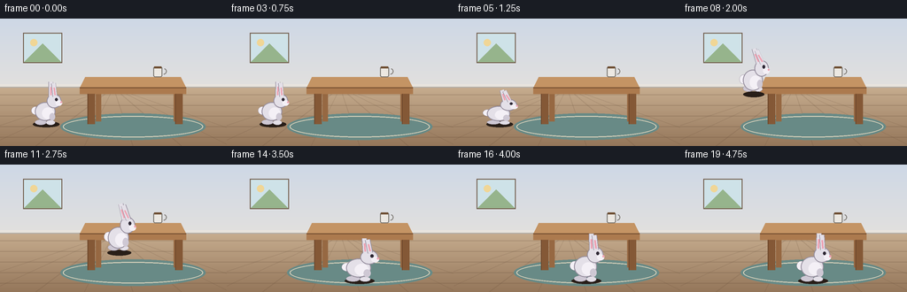
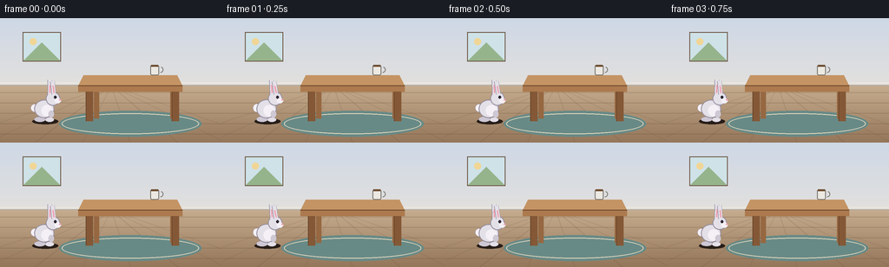

CODING AGENTS AS PIXEL WORLD MODELS
traex/Seed-2.1-Pro-0915 · dynamic_spatial_relationship_0020
点击播放 · 原生 RGB 像素
逐轮保存的候选
回放视频、检查图与代码变化。
每份候选均可单独播放。实际图片检查记录在下方工具轨迹中。
候选 01播放与检查图
点击播放 · 原生 RGB 像素


展开代码变化
--- 上一保存版本
+++ 本次保存版本
@@ -0,0 +1,282 @@
+"""Text-to-video renderer for the rabbit/table spatial prompt.
+
+Scene: a rabbit waits on the left of a table, then jumps to the front of
+the table. Everything is drawn procedurally with PIL at 3x supersampling
+and downscaled to 256x144. No external assets or models are used.
+"""
+from pathlib import Path
+import math
+
+import numpy as np
+from PIL import Image, ImageDraw
+
+import artifact_io
+
+W, H, N, FPS = 256, 144, 20, 4.0
+SS = 3 # supersampling factor
+SW, SH = W * SS, H * SS
+
+CASE_DIR = Path(__file__).parent
+
+# Key positions (base-resolution coordinates, feet anchor points).
+START_X, START_Y = 52.0, 118.0
+END_X, END_Y = 150.0, 130.0
+JUMP_LIFT = 40.0
+JUMP_FRAMES = 8 # frames 5..13
+
+
+def clamp(v, lo=0.0, hi=1.0):
+ return max(lo, min(hi, v))
+
+
+def lerp(a, b, t):
+ return a + (b - a) * t
+
+
+def ease_in_out(t):
+ t = clamp(t)
+ return t * t * (3 - 2 * t)
+
+
+# ---------------------------------------------------------------------------
+# Static background
+# ---------------------------------------------------------------------------
+
+def build_background():
+ img = Image.new("RGB", (SW, SH))
+ px = img.load()
+ horizon = 78 * SS
+ for y in range(SH):
+ if y < horizon:
+ t = y / horizon
+ r = int(lerp(206, 226, t))
+ g = int(lerp(216, 224, t))
+ b = int(lerp(230, 222, t))
+ else:
+ t = (y - horizon) / (SH - horizon)
+ r = int(lerp(198, 148, t))
+ g = int(lerp(172, 118, t))
+ b = int(lerp(142, 90, t))
+ for x in range(SW):
+ px[x, y] = (r, g, b)
+
+ d = ImageDraw.Draw(img, "RGBA")
+
+ # Floor plank seams.
+ for yy in range(86, 144, 12):
+ d.line([(0, yy * SS), (SW, yy * SS)], fill=(90, 66, 48, 55), width=SS)
+ # Perspective seams converging toward a vanishing point.
+ vanish = (128 * SS, 78 * SS)
+ for fx in range(-2, 6):
+ bottom_x = (40 + fx * 55) * SS
+ d.line([vanish, (bottom_x, SH)], fill=(90, 66, 48, 38), width=SS)
+
+ # Baseboard.
+ d.rectangle([0, (78 - 4) * SS, SW, 78 * SS], fill=(232, 228, 222, 255))
+ d.rectangle([0, (78 - 1) * SS, SW, 78 * SS], fill=(180, 174, 166, 255))
+
+ # Framed picture on the wall.
+ fx0, fy0, fx1, fy1 = 26 * SS, 16 * SS, 70 * SS, 50 * SS
+ d.rectangle([fx0, fy0, fx1, fy1], fill=(110, 88, 70, 255))
+ d.rectangle([fx0 + SS, fy0 + SS, fx1 - SS, fy1 - SS],
+ fill=(206, 226, 232, 255))
+ d.polygon([(fx0 + SS, fy1 - SS), ((fx0 + fx1) // 2, fy0 + 12 * SS),
+ (fx1 - SS, fy1 - SS)], fill=(150, 180, 140, 255))
+ d.ellipse([(fx0 + 8 * SS, fy0 + 7 * SS), (fx0 + 16 * SS, fy0 + 15 * SS)],
+ fill=(240, 214, 150, 255))
+
+ return img
+
+
+def draw_rug(base):
+ d = ImageDraw.Draw(base, "RGBA")
+ cx, cy = 150 * SS, 122 * SS
+ rx, ry = 82 * SS, 15 * SS
+ d.ellipse([cx - rx, cy - ry, cx + rx, cy + ry], fill=(104, 138, 134, 235))
+ d.ellipse([cx - rx + 3 * SS, cy - ry + 3 * SS,
+ cx + rx - 3 * SS, cy + ry - 3 * SS],
+ outline=(224, 214, 190, 220), width=SS)
+
+
+def draw_table(base):
+ d = ImageDraw.Draw(base, "RGBA")
+ wood = (172, 122, 78, 255)
+ wood_top = (196, 148, 100, 255)
+ wood_dark = (132, 88, 54, 255)
+ wood_edge = (110, 72, 44, 255)
+
+ # Back legs (slightly darker, behind the slab).
+ for lx in (108, 196):
+ d.rectangle([lx * SS, 80 * SS, (lx + 6) * SS, 116 * SS],
+ fill=(150, 104, 66, 255))
+
+ # Tabletop as a shallow perspective slab.
+ d.polygon([(96 * SS, 66 * SS), (204 * SS, 66 * SS),
+ (210 * SS, 78 * SS), (90 * SS, 78 * SS)], fill=wood_top)
+ d.rectangle([90 * SS, 78 * SS, 210 * SS, 85 * SS], fill=wood)
+ d.line([(90 * SS, 78 * SS), (210 * SS, 78 * SS)],
+ fill=wood_edge, width=SS)
+
+ # Front legs.
+ for lx in (99, 198):
+ d.rectangle([lx * SS, 85 * SS, (lx + 8) * SS, 119 * SS],
+ fill=wood_dark)
+ d.line([(lx * SS, 85 * SS), (lx * SS, 119 * SS)],
+ fill=wood_edge, width=SS)
+
+ # Mug resting on the tabletop.
+ mx = 178 * SS
+ my0, my1 = 54 * SS, 66 * SS
+ d.rounded_rectangle([mx - 5 * SS, my0, mx + 5 * SS, my1],
+ radius=2 * SS, fill=(236, 232, 226, 255),
+ outline=(120, 116, 110, 255), width=SS)
+ d.arc([mx + 3 * SS, my0 + 2 * SS, mx + 10 * SS, my0 + 9 * SS],
+ start=-70, end=90, fill=(120, 116, 110, 255), width=SS)
+ d.rectangle([mx - 4 * SS, my0, mx + 4 * SS, my0 + 2 * SS],
+ fill=(110, 78, 50, 255))
+
+
+# ---------------------------------------------------------------------------
+# Rabbit
+# ---------------------------------------------------------------------------
+
+FUR = (228, 224, 232, 255)
+FUR_SHADE = (206, 200, 212, 255)
+FUR_OUTLINE = (150, 142, 158, 255)
+BELLY = (244, 240, 246, 255)
+PINK = (238, 162, 178, 255)
+EYE = (44, 38, 50, 255)
+
+
+def draw_rabbit(base, feet_x, feet_y, depth, sx, sy, ear_tilt, tuck, phase):
+ """Side-view rabbit facing right; (feet_x, feet_y) is ground contact."""
+ layer = Image.new("RGBA", (SW, SH), (0, 0, 0, 0))
+ d = ImageDraw.Draw(layer, "RGBA")
+
+ s = SS * depth
+ cx, cy = feet_x * SS, feet_y * SS
+ breathe = 0.02 * math.sin(phase * 2 * math.pi)
+
+ def ell(ox, oy, rx, ry, fill, outline=None, width=0):
+ rxp = rx * s * sx
+ ryp = ry * s * sy * (1 + breathe)
+ x0 = cx + ox * s * sx - rxp
+ y0 = cy + oy * s * sy - ryp
+ d.ellipse([x0, y0, x0 + 2 * rxp, y0 + 2 * ryp],
+ fill=fill, outline=outline, width=width)
+
+ def rline(points, fill, width_px):
+ d.line([(cx + x * s * sx, cy + y * s * sy) for x, y in points],
+ fill=fill, width=max(1, int(width_px * s)), joint="curve")
+
+ foot_y = -1 - tuck
+ # Back foot and front foot.
+ ell(-6, foot_y, 6.5, 3.0, FUR_SHADE, FUR_OUTLINE, max(1, SS // 2))
+ ell(5, foot_y + 0.5, 5.0, 2.6, FUR, FUR_OUTLINE, max(1, SS // 2))
+
+ # Tail.
+ ell(-12, -14, 4.6, 4.6, BELLY, FUR_OUTLINE, max(1, SS // 2))
+
+ # Body and belly.
+ ell(-1, -13, 11.5, 10.5, FUR, FUR_OUTLINE, SS)
+ ell(2, -11, 6.5, 6.5, BELLY)
+
+ # Front paw.
+ ell(7, -7 - tuck * 0.6, 3.2, 4.2, FUR_SHADE)
+
+ # Head.
+ ell(9, -25, 8.2, 8.0, FUR, FUR_OUTLINE, SS)
+ # Cheek / muzzle.
+ ell(14.5, -22.5, 3.6, 3.0, BELLY)
+ # Nose and eye.
+ ell(17.2, -23.6, 1.1, 1.0, PINK)
+ ell(11.5, -26.5, 1.5, 1.7, EYE)
+
+ # Ears: rounded thick lines swept by ear_tilt (positive = backward).
+ for bx, length, lean in ((5.5, 15.5, 0.0), (10.0, 14.0, 1.6)):
+ tx = bx - ear_tilt * 9 - lean
+ ty = -31 - length + ear_tilt * 3
+ rline([(bx, -30), (tx, ty)], FUR_OUTLINE, 5.4)
+ rline([(bx, -30), (tx, ty)], FUR, 4.4)
+ ix = bx - ear_tilt * 7 - lean * 0.6
+ iy = -31 - length * 0.62 + ear_tilt * 2
+ rline([(bx, -31.5), (ix, iy)], PINK, 1.8)
+
+ base.alpha_composite(layer)
+
+
+def draw_shadow(base, feet_x, feet_y, depth, lift_ratio):
+ d = ImageDraw.Draw(base, "RGBA")
+ alpha = int(70 * (1 - 0.65 * lift_ratio))
+ spread = 15 * depth * (1 - 0.25 * lift_ratio)
+ cx, cy = feet_x * SS, (feet_y + 1.5) * SS
+ d.ellipse([cx - spread * SS, cy - 3.2 * SS,
+ cx + spread * SS, cy + 3.2 * SS],
+ fill=(40, 30, 24, alpha))
+
+
+# ---------------------------------------------------------------------------
+# Per-frame animation state
+# ---------------------------------------------------------------------------
+
+def rabbit_pose(i):
+ """Return (x, y, depth, sx, sy, ear_tilt, tuck, phase, lift_ratio)."""
+ if i <= 4: # idle on the left
+ phase = i / 5.0
+ return (START_X, START_Y, 1.0, 1.0, 1.0,
+ 0.08 * math.sin(phase * 2 * math.pi), 0.0, phase, 0.0)
+
+ if i <= 13: # jump, p: 0 -> 1
+ p = (i - 5) / JUMP_FRAMES
+ e = ease_in_out(p)
+ x = lerp(START_X, END_X, e)
+ floor_y = lerp(START_Y, END_Y, e)
+ lift = JUMP_LIFT * 4 * p * (1 - p)
+ y = floor_y - lift
+ depth = lerp(1.0, 1.12, e)
+ tuck = 4.0 * math.sin(math.pi * p)
+ ear_tilt = 0.6 * math.sin(math.pi * p)
+
+ if i == 5: # crouch / wind-up
+ sx, sy = 1.14, 0.82
+ ear_tilt = 0.35
+ tuck = 0.0
+ elif i == 13: # landing squash
+ sx, sy = 1.16, 0.80
+ ear_tilt = 0.15
+ tuck = 0.0
+ else: # airborne: slight stretch
+ sx, sy = 0.94, 1.08
+ return (x, y, depth, sx, sy, ear_tilt, tuck, p, lift / JUMP_LIFT)
+
+ # Recover from landing, then idle in front of the table.
+ rec = clamp((i - 13) / 2.0)
+ sx = lerp(1.16, 1.0, ease_in_out(rec))
+ sy = lerp(0.80, 1.0, ease_in_out(rec))
+ phase = (i - 13) / 7.0
+ ear_tilt = 0.15 * (1 - rec) + 0.08 * math.sin(phase * 2 * math.pi) * rec
+ return (END_X, END_Y, 1.12, sx, sy, ear_tilt, 0.0, phase, 0.0)
+
+
+def render_frame(i, background):
+ frame = background.copy().convert("RGBA")
+ draw_rug(frame)
+ draw_table(frame)
+
+ x, y, depth, sx, sy, ear_tilt, tuck, phase, lift_ratio = rabbit_pose(i)
+ draw_shadow(frame, x, y, depth, lift_ratio)
+ draw_rabbit(frame, x, y, depth, sx, sy, ear_tilt, tuck, phase)
+
+ small = frame.convert("RGB").resize((W, H), Image.LANCZOS)
+ return np.asarray(small, dtype=np.uint8)
+
+
+def main():
+ background = build_background()
+ frames = np.stack([render_frame(i, background) for i in range(N)], axis=0)
+ artifact_io.save(frames, CASE_DIR)
+ print(f"Saved {frames.shape[0]} frames at {W}x{H}, {FPS} fps -> {CASE_DIR}")
+
+
+if __name__ == "__main__":
+ main()
可观测工具轨迹
实际执行的命令与返回图片。
命令 1exit 0
/bin/bash -lc 'cat prompt.txt GENERATION_RULES.md task_spec.json 2>/dev/null; ls -la'
命令 2exit 0
/bin/bash -lc 'cat artifact_io.py'
命令 3exit 0
/bin/bash -lc 'cd "$(pwd)" && python generate.py && ls -la frames | head && ls -la'
命令 4exit 0
/bin/bash -lc "python - <<'EOF'
import numpy as np
from PIL import Image
for i in range(20):
a = np.asarray(Image.open(f\"frames/{i:02d}.png\").convert(\"RGB\")).astype(int)
# fur: high R/G/B, slightly bluish-white; exclude near-white mug & wall
r,g,b = a[...,0],a[...,1],a[...,2]
mask = (r>195)&(g>190)&(b>195)&(b>=r-4)&(np.abs(r-g)<14)&~((r>228)&(g>228)&(b>220))
ys,xs = np.where(mask)
if len(xs):
print(f\"f{i:02d} n={len(xs):4d} cx={xs.mean():6.1f} cy={ys.mean():6.1f} x[{xs.min():3d},{xs.max():3d}] y[{ys.min():3d},{ys.max():3d}]\")
EOF"保存候选 1 份；完成命令 4 次；可验证图片返回 0 张。原始 API 响应与完整日志保留在本地。